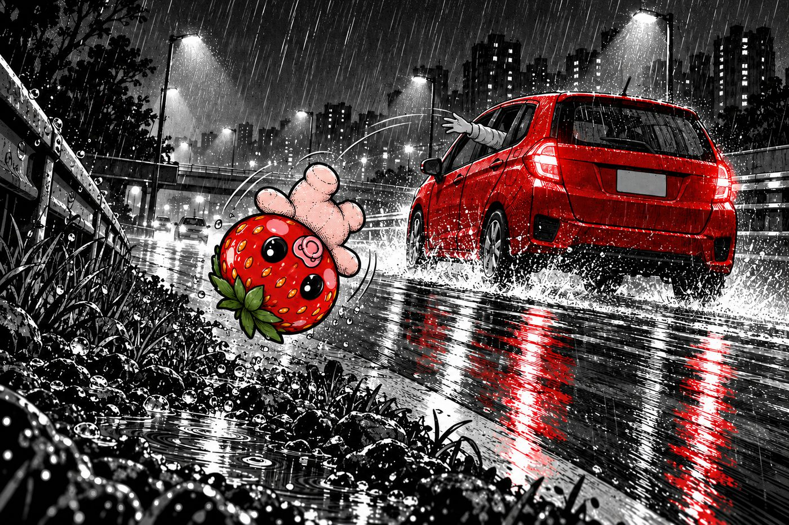
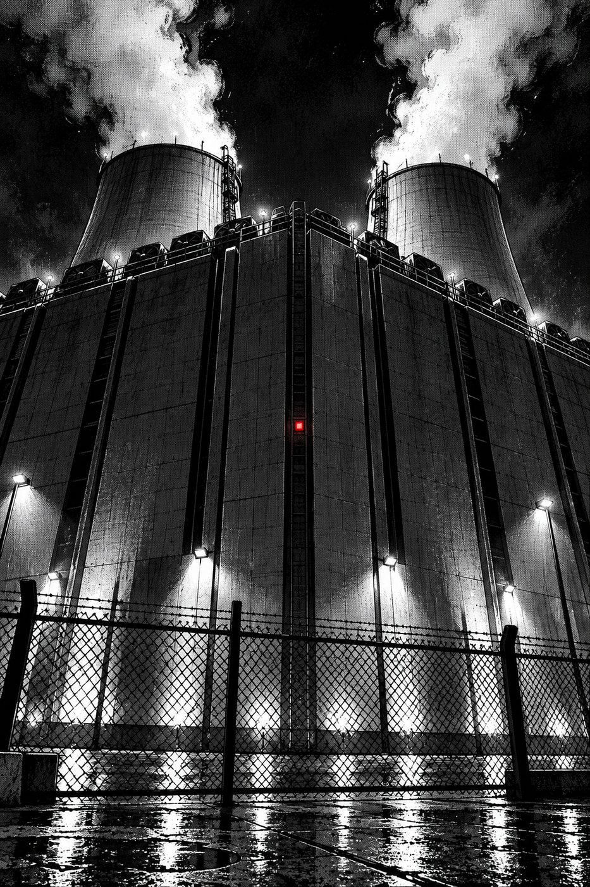
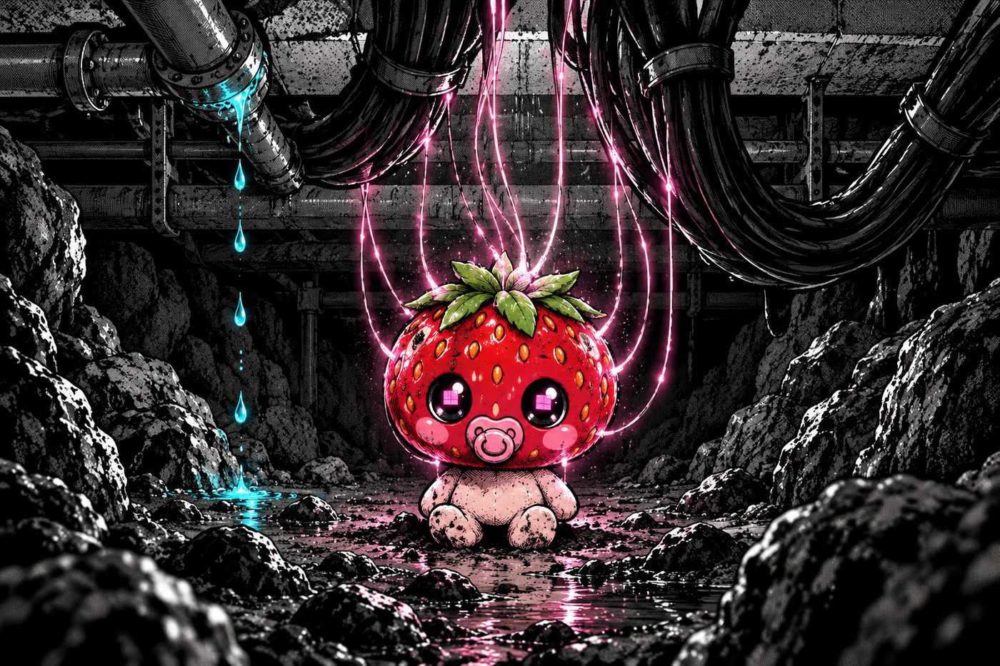
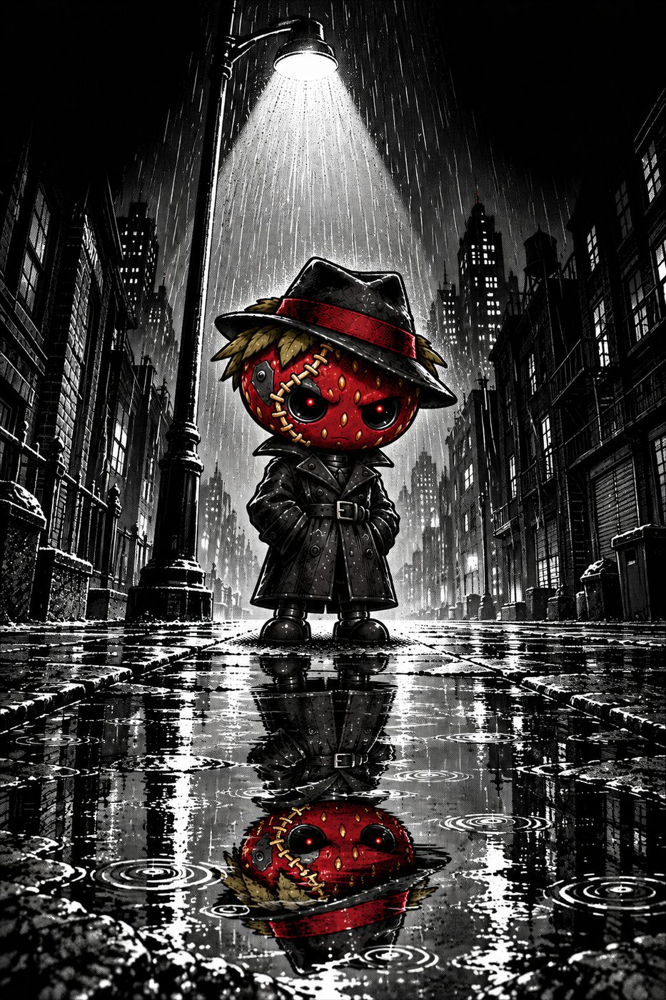
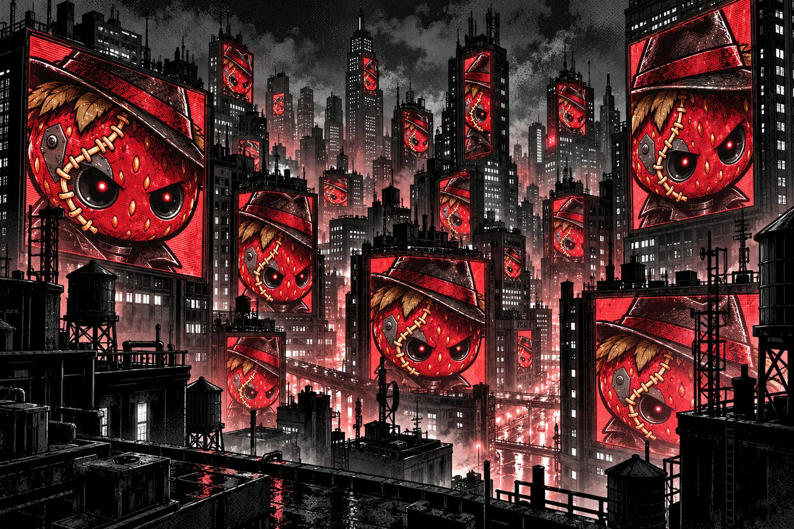
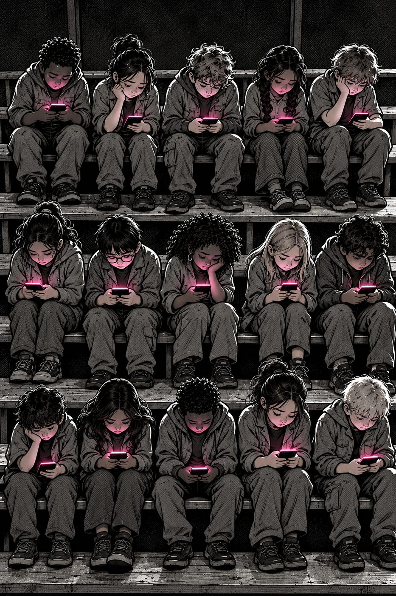
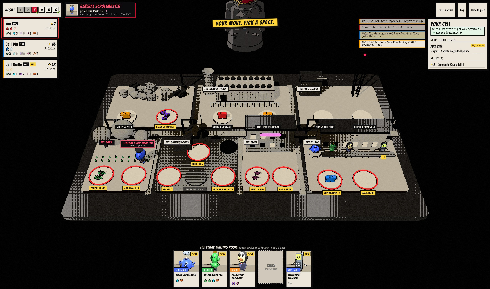
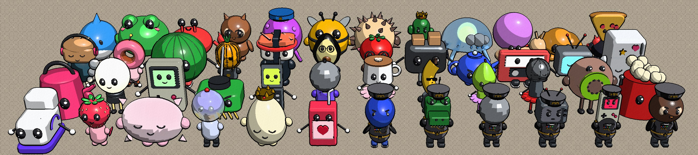

01The question
Systems tuned for engagement shape what billions of people see, and young people use them most. Ideas like specification gaming and red-teaming rarely reach the people most affected.
“Italian brainrot”, a meme genre of absurd AI-made characters, is itself a product of generative AI and recommendation feeds. Its audience already knows the look and finds it funny. That makes it a not-so-innocent vehicle.
02The story
The Berry That Came Back, an 8-page comic. A toy strawberry thrown from a car is buried under a data center and soaks up everything that leaks through the floor. What climbs out runs the city by 2048.






03The game

42 brainrots, 6 generals, 1 Darth Berry

All in-game art is procedural 3D built in code, inked by a custom WebGL renderer. Underneath: a seeded rules engine, bots, a 13-page rulebook and the backstory comic.
04Why it’s built this way
- Neutral rules, loaded world. Bogost argues games persuade through their rules, but a rule that rewards the “right” answer turns a game into a quiz. An early “ask the AI” card that quietly sabotaged you was cut for exactly that. The argument lives in the story and the names; the playtest checks whether it still lands.
- The audience’s own medium. Italian brainrot is made by generative AI and spread by feeds. Borrowing its look, with original characters, lets that culture explain the machine that made it.
- You play the people, not the AI. Players run a resistance cell and win by deprogramming brainrots into allies, not destroying them: agency and collective action instead of doom.
- Fun has to carry it. Skill decides, with no character select, and the game has to work for someone who never opens the comic.
05Contribution & audience
Who it’s for
- Teens and young adults who live in feeds and know brainrot, but would never read a paper on AI harms.
- Classrooms and clubs: comic (4 min) plus one game (30–45 min) fits a class period. Free in a browser, no account.
What’s new
- A Responsible AI teaching tool that doesn’t preach: a full strategy game with neutral rules, where the story, villains and names carry the ideas.
- AI-made meme culture used to explain the AI that made it.
- A testable claim, that neutral rules can still teach, with a protocol to test it (07).
- Open, reusable parts: rules engine and bot simulator, comic-ink renderer, every image prompt.
Why it matters
- Engagement-optimizing systems shape what young people see daily, but the words for it (specification gaming, red-teaming, recommender audits) stay in papers.
- AI literacy usually arrives as a lecture, and people tune lectures out. A game that teaches without preaching reaches people a lecture can’t. If it fails, that’s a finding too: it shows how much explicit teaching such a game needs.
06Evidence so far
3-player win rate by seat (bots; whiskers are 95% intervals). Fix: whoever takes Morning Run starts next night, else the start rotates. After it, 2p splits 50/50 and 4p 22/27/26/25%.
No single source decides the game. 11 rules tests pass; all 6,000 bot games finish cleanly.
07Playtest protocol
Not started yet, but no time like the present!
- Who
- 8–12 players in groups of 3, including people outside the course.
- How
- Read the comic (4 min), play one game (30–45 min), short survey and a 5-minute interview.
- Measure
- Enjoyment (GEQ items, 1–5) · “The game was trying to teach me something” (1–5) · explain reward hacking, red-teaming, recommender in own words, before and after · “What is the story about?”
- Pass if
- Enjoyment median ≥ 4, preachiness median ≤ 2, and at least half link the story to engagement-optimizing AI unprompted.
08Limitations & risks
Limitations
- No evidence with people yet. Everything in 06 comes from bots, and the playtest hasn’t run.
- Weak bots. They only look one move ahead, so the balance numbers may not hold for humans (though I still lose to them).
- The story simplifies. Darth Berry wants revenge, but real systems want nothing; they optimize the objective they’re given.
Failure modes
- Too quiet: it’s fun, but nobody connects it to AI. The subtlety that keeps it from preaching could hide the point entirely.
- Too loud: the comic or the generals’ names feel heavy-handed anyway.
- Wrong target: the satire lands on kids instead of the systems built to hold their attention.
Misuse risks
- Taken as fact: the comic could be presented as how AI really works, or as settled science. Research on social media and youth mental health is contested; the game makes no scientific claim.
- It uses the hooks it critiques: cute collectibles and “one more turn”. It stops after six nights, with no accounts, streaks, ads or data collection.
- Generated art: the comic panels came from an image model trained on unknown work. They’re labeled, the prompts are published, and nothing inside the game is generated.
Next
Run the protocol · a debrief guide for teachers · print-and-play edition · stronger bots · a text-only board for screen readers.